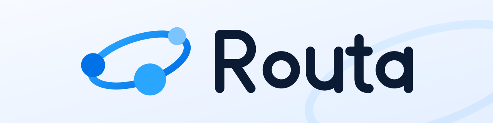
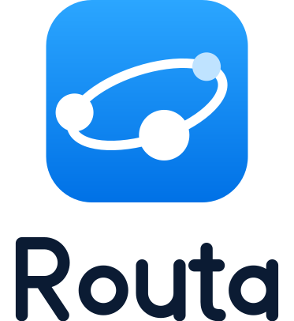
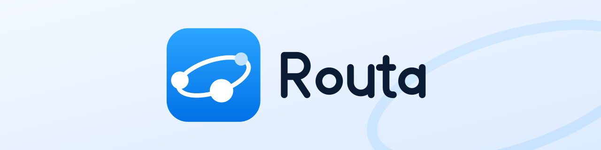

| 项目 | 规定 |
|---|---|
| 安全留白 | 四周至少留出“前方大节点的直径”（约图标高度的 1/4） |
| 最小尺寸 | 横版高度 ≥ 20 px（屏幕）；更小时只用图标 |
| 主用版本 | 横版裸符号 bare-light（浅底）/ bare-dark（深底）；带圆角底板的横版用于应用商店、安装包等需要“像 App 图标”的场合 |
| 图标与字标比例 | 字标大写高 = 图标高 × 0.42，间距 = 图标高 × 0.22，字标与图标垂直居中对齐，不要单独缩放其中一个 |
| 颜色 | 图标渐变 #2BA6FF → #0071E6；字标浅底用 #0B1B33，深底用 #FFFFFF |
| 禁止 | 拉伸变形、改字标颜色为其他彩色、给字标加描边或阴影、把图标放在字标右侧 |